武汉跑腿小哥：从健身教练到快递员
原文链接 备份链接 文 | 杨长安 情人节后的第二天，辛野开始帮助在外地回不了武汉的人喂宠物。 在此之前，这位健身教练在仅有一个棉质口罩的情况下，为不能出门的武汉居民送了九天的食物和生活用品。二月的武汉还很寒冷，注册为临时跑腿员的辛野， …
没有想到终于定下决心动笔写下的第一篇（公众号）文章，是记录这样的一段经历。
2020年1月17日，临时决定回武汉，原计划初五（1月29日）回港。
可新冠肺炎发展地太快了。
1月23日，武汉封城。
3月4日，我搭乘首班包机回到香港，入住检疫中心开始14天的隔离。
2月2日，武汉封城第11天。
我的记者朋友L 问，“有没有认识滞留武汉的香港人，同乡会那种。”
我说，“同乡会的（香港湖北社团总会），也都是湖北人/武汉人的港漂比较多，好像没有多少香港人。”
在群里帮转求采访的信息后，有人加了L的微信。
“oh好吧不是local…”
还没拿到永久居民的港漂如我，在“滞留的外地人”语境下，一开始并没有默认自己为“香港人”。
从出生到上大学之前，我一直在武汉长大。
我是武汉人，是清晰的身份认同。
“戴好口罩，不要去人多的地方就行了”
1月4日，香港家里楼下的保安爷爷告诉我说，澳门开始对武汉来的航班专门检疫量体温了。
1月9日，看到“香港政府全程进入防疫戒备状态”消息，转发到了家人群。
1月12日，和公司同事在新加坡海外会议途中，看到新闻爆出来认为武汉肺炎为SARS的消息，赶紧给爹妈打了跨洋电话提醒他们注意。
这个春节原计划是不回家过年的，或许让妈妈（带3只猫）开车到深圳来，但因为有工作要处理，还是临时买了回家的高铁。
还没来得及囤医用口罩，就随手买了防花粉的口罩戴上车了，想着多多少少有点保护。
1月17日，香港西九龙站出发。
站内广播一直在说如有发热等症状，要联系工组人员等。同行戴口罩的人不足1/3。
行车途中，看到新闻消息报道出来第2例死亡。嗯，年纪大、有慢性病史。朋友圈里开始有人调侃，武汉老百姓似乎完全没有任何警觉，因为都相信了“可防可控”。有医护人员全套防护的照片流传，家人是医生的老友让我放心，“越是感染科的医生越知道怎么保护自己”。

1月18日小年夜，外婆一家按原计划吃了午饭。去年过年大年三十才回家，一顿年饭都没赶上，今年能吃上便满足了。
1月20日，早上新闻报出来新增人数超过100的时候，武汉的气氛就开始变得略微有点紧张。
原计划21日一起吃午饭的朋友，是医院家属。
虽然家属并不是一线医护人员，但一家人都住在医院宿舍。稳妥起见，我们取消了这次会面。
“安全过后，咱们再约。”
早上9点，从武昌的家里出门，到汉口的武汉天地。为的就是——和我的发小X认真地过个早。
“过早”是武汉人生活的精髓所在。
常年不在武汉的我们，相聚也比较难得，吃一顿正宗的早餐是非常有诚意的聚会。
回头想起来真觉得是在用生命过早，排着长长的队，整条街几乎没有人戴口罩。
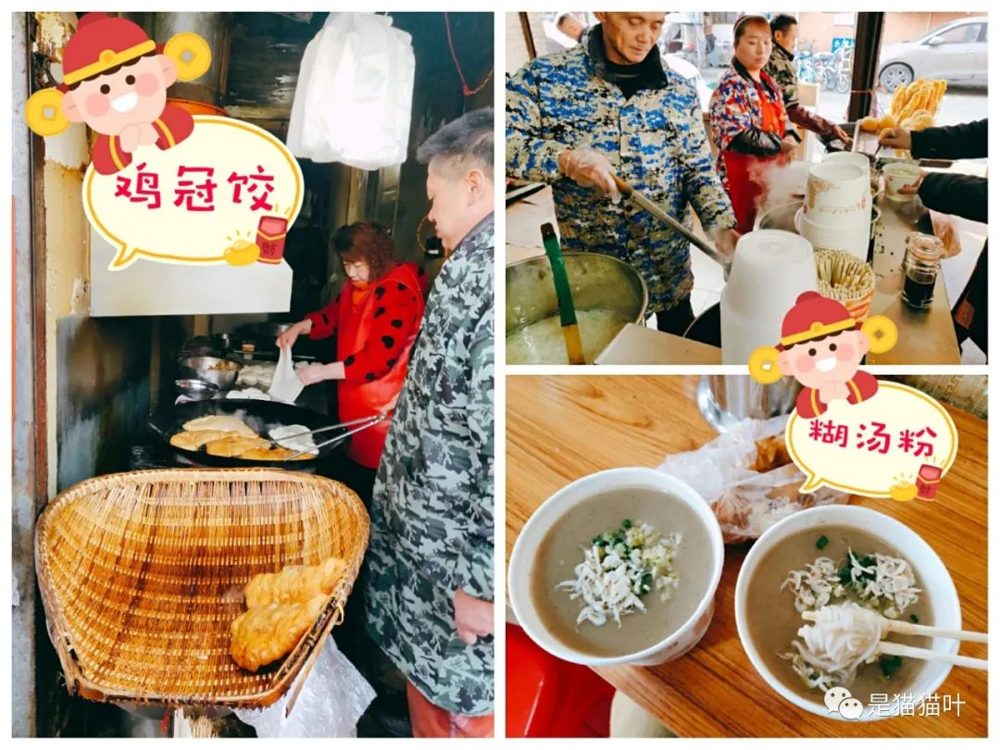
为了过年期间在家吃饭囤货，下午跟妈妈去了菜市场，我们戴了口罩，两个过敏性鼻炎患者家中常备的存货。
菜市场里中老年人很多，戴口罩的人不足1/10。
朋友圈里的调侃是，武汉人说“莫挨老子”。
1月21日，和刚刚从深圳回来的Y、刚刚从青山下班的K驱车来到汉街万达广场。平时最热闹繁华的商场如今空荡荡，在岗的工作人员都戴了口罩。
屈臣氏店内仅剩的2包防花粉口罩被一位男士迅速买走，即便他知道这可能对新冠病毒作用不大。我们没有排队就吃到了太二酸菜鱼，上菜的小哥哥戴了三层口罩。其他顾客看上去也都小心翼翼。
这就是封城之前的最后一顿“聚餐”。
1月23日，农历二十九。早上8点醒来看到新闻，武汉在凌晨封城了。
封城生活：焦虑，气愤，迷茫
再到平静
我们家和大多数封城里的人经历差不多，好在是过年之前囤足了食物，突然封城了也并不太担心吃饭的问题。
宅在家里不出门倒没什么大碍，要命的是我的（过敏性）鼻炎开始发作了，伴随着一阵又一阵降温降雨而加剧。鼻塞，无法呼吸，时而止不住地流鼻涕、打喷嚏；鼻子堵住了用嘴呼吸，喉咙干到咳出痰，也弄得嘴唇干裂、上火长包。
在不舒服的状态下也心生怨怼：如果21/22日坚持离开武汉，回到温暖湿润的香港，至少不用遭这个罪啊！
21/22日的挣扎是，看这形势越来越严峻，消息传出来钟南山建议封城——千万人口的城市，真的会封城吗？如果真的有这个可能，为了不耽误返港开工，要不要赶快走？可以怎么样走？
妈妈的重点反驳理由是 “你为什么就一定觉得要得这个病？不能是健健康康的？”/“如果路上出了什么事情怎么办？”
我的顾虑是：我在家鼻炎不能呼吸了难以忍受；如果留在武汉，极端情况下得不到救治怎么办？毕竟有需要的物资是可以从外面送进来的，且虽然出不去但紧急需要应该还是能想办法赶回来。
否定了很多方案后，拗不过我妈的坚持，还是老老实实乖乖家里蹲。和鼻炎纠缠大乱斗，吃药、喷雾、按摩、泡脚轮流操作。
妈妈的另一个朋友，几天之前就按原计划开车去海南的家里过年，她电话来说在湛江为了过海排了一整天的队。
不似往年，这个大年三十里，一条祝福的短信我都没有发，实在是没有心情问候，况且若是朋友问起我是不是在武汉，又要凭添几丝担忧。
央视的春晚也看不下去，在淘宝上捐了款，也在湖北青年会参与捐款统一购买医疗物资发往前线，朋友圈里看到很多求物资的信息、和行动起来募捐的团体。安心在家隔离，可能是对控制疫情最好的支持。
封城期间是Screen Time爆棚的一段日子，尤其在刚刚开始的时候。不断刷新微博、微信的消息，渴望了解真相，微信群里传递各种转发来的资讯和“谣言”，家里的电视一直开着CCTV13新闻频道滚动播出新的进展。
因为太多太多的原因，焦虑到极点。
很担心这座城里发生的一切一切。但是却觉得无能为力。
武汉像真的成了围城，城里的人想出去，也有城外的人想进来。
还有几位记者朋友，陆续来问问我的情况。
N生日的那个凌晨仍在写稿，我尝试帮她联络医护朋友，尝试联络超市的负责人，希望可以提供到有用的信息。她担忧城市管理、垃圾处理、殡仪馆……事实证明了传媒在整个疫情中发挥了多么大的作用，被遗忘的角落，被搅浑的真相，都因为有一线记者的搏命报道才得到关注。
她在2月11日半夜出发来到了武汉，加入了一线记者的队伍中，为了不让家人担心还是偷偷离开家的。真心佩服和感谢这样的勇士，我是曾经拥有却没能坚守住新闻理想的人，能做的就是尽可能提供我知道的讯息。
差不多封城十来天之后，我决定减少疫情信息的摄入，首先就是关掉了电视机。
就像几个月之前，在香港避免zz抑郁的那样。
妈妈加入了自制蛋糕馒头饺子包子的潮流，
我在家给三只猫猫拍视频剪视频，抖音上直播猫咪洗澡，和其他隔离的朋友们保持聊天通话，也在家里整理书柜来一波又一波回忆杀…
（疫情期间有猫的陪伴实在是太重要了）
1月31日，大年初七。团队原计划在黄大仙祈福的开年仪式改为了网络会议。
2月3日，大年初十。第一场线上早会开始，从此周一到周五每天早上都有1-2小时的早会。
多谢团队这样的安排，拯救了在疫区里的焦虑情绪，恢复工作的状态。
封城的日子里，初三开车出门去超市采购过食物，还顺便看了看刚刚通车不久的杨泗港大桥。空荡荡的武汉城过于寂静好不习惯，原来以前觉得厌烦的堵车和喧闹才是幸福。
到后期全部禁行后，社区的群里开始组织各种各样的团购。十分钟不看手机就是200条未读消息…在此期间联络到一位猪肚鸡火锅连锁店的老板，以成本价40元一只提供冻品三黄鸡，火速在小区的业主群发起团购。
发小调侃我说，港险精英、港中文硕士、90后靓女叶老师，因返乡过年被困疫区，如今她成了小区的整鸡团购团长。
而武汉的同学里，有人就是医护人员，也有人参与了雷神山的工作，有人在食品集团组织提供团购…
突如其来的疫情让这个平时吵吵闹闹的城市格外团结。
感谢城市里默默无闻付出的很多平凡人，填补了突然封城之后存在的诸多漏洞。
“工联会协助在鄂港人微信群，
有需要寻求帮助的朋友，请联系小秘书！”
2月18日，在湖北老乡会的群里，小秘书通知给了一个群组二维码。
这条消息被我错过了。
一直到2月21日，看到群里转发的工作汇报才想起来有这么一回事。
加入到滞留群后，按工联会工作人员的通知填写了登记问卷。


☜ 滑 动 查 看 更 多图 片
Slide for more photos
2月24日晚8点，香港政府开了新闻发布会，确认了将安排包机分批接滞留在湖北的港人回到香港。首批人士为滞留武汉的港人，和其他市的孕妇等紧急个案，湖北港人回港后要接受14天检疫。
晚上20：22，在学姐的提醒下，打电话给+852-1868登记了个人信息，包括姓名、香港证件号码、在武汉的具体住址、身体状况如何。给到了一个个人档案编号。
打电话的入境处工作人员，听声音也是鼻塞了，想来连续工作也是很不容易。
2月26日 18：50，接到了香港入境处打回来的电话。再次确认个人信息和身体状况，包括港澳通行证的号码和逗留签证有效期。
2月28日，香港入境事务处通过手机号码添加了微信，确认信息和要求收集了证件照片。
3月2日 周一中午12点，接到社区的电话，确认了我的名字和住址，以及是否有去过医院、开药。社区工作人员并不知道具体的原因，只是收到了一封繁体字的文件，按通知确认信息。
下午2点半，微信收到入境处通知，“特区政府已安排您乘坐3月4日（星期三）中午从武汉天河国际机场起飞的政府专机回港。”
终于确定了可以回家了。
下午3点，社区再次打来电话确认意向。香港包机，将在4日、5日两天，每天上午2班下午1班飞机，是否要搭乘飞机回港。
3月3日，晚上6点20微信通知了车长资料，司机会在晚上8点之前联络。
司机打电话来，确认明早8:30～9:00左右到小区门口，到时候会提前联络我，重点提醒了社区一定要同意放人。
晚上10点半再次接到入境处的电话提醒。
收拾行李，这次终于真的要回家了。
3月4日，星期三。
由于提前通知了飞行过程中不会有餐食，做好了三四个小时不进食的准备，早上吃了饱饱的一碗热干面。
9点司机师傅准时来到小区门口，穿了一身防护服，戴了口罩，小区保安提前收到了通知要放行，并未要求什么文件。
我是司机师傅接的第一位，后面还有6人要接齐，再一起去到天河机场。
原本总共8人，有一位临时决定放弃乘坐包机。
司机师傅说他是是省外办租赁的车（一辆小面包），过去陆陆续续参与了几次撤侨。29日送埃及和阿联酋，昨晚刚刚送完也门和伊拉克的，“主要是留学生”。

差不多9点45，接到了武汉音乐学院的最后一位车友，一位70多岁的阿姨。她说89年就来到香港了，不过到现在粤语还是说得没有那么地道。同车的有一对姐妹早上出门前还接受了深圳电视台的采访，她也和我一样，受记者之托沿路拍摄了途中的经历。还有一位住在大围公屋的老夫妻。他们大多都是永久居民了，不过也仍是一口纯正的武汉话。
我的车友们都穿戴了社区发的防护服甚至鞋套和手套，有的还用保鲜膜包住了手机，装备相当齐全。我虽然没有，但他们都穿了我也还是安全的吧。
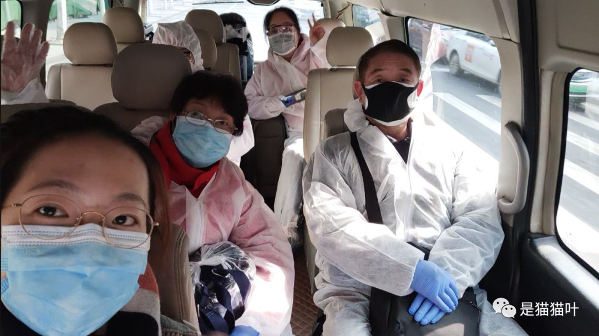
车子走过长江大桥，桥上的车很少。大家都说要拍下来，因为这是长江大桥。
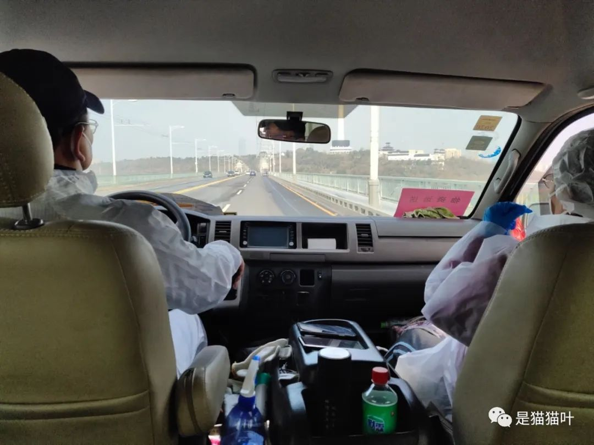
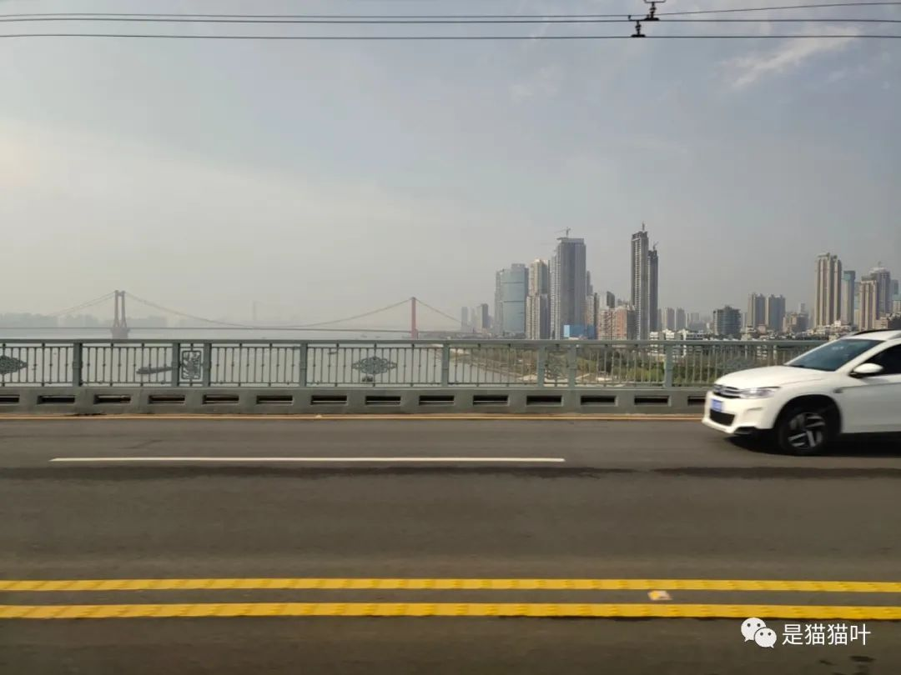
在机场收费站的交警关卡等候了半个多小时（通行名单还没送到，交警便不允许放行），大概11点才到达了武汉天河国际机场。
穿戴齐全的香港的工作人员在下车前登记确认名单。
在复习了一个多月的爽朗武汉话（尤其是那段全网火爆的“丽丽差火”）后，突然开始进入轻声细语的广东话模式…
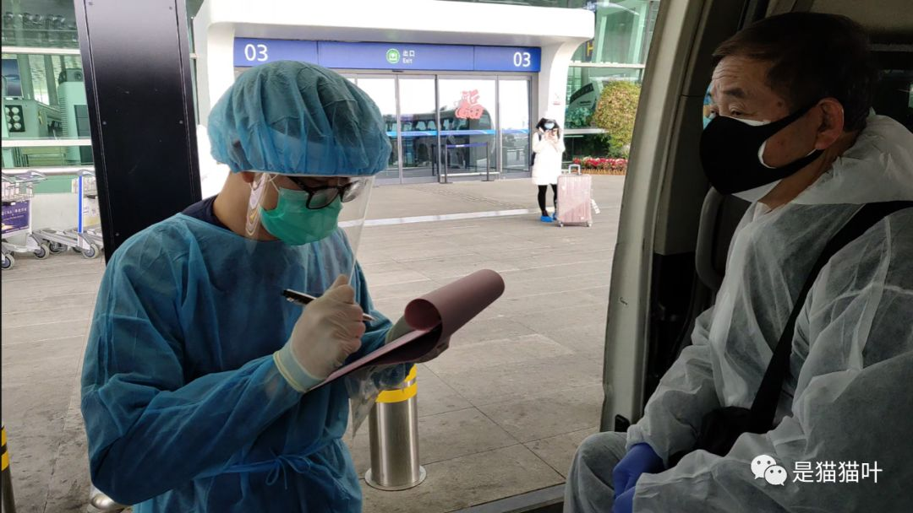
显示屏上，只有这一个航班即将起飞。
天河机场里临时的“香港入境处”为大家登记证件，每人发了一块名牌可以挂在胸前。派发了机票和行李挂牌，还有一个紫荆花的环保袋：包括行政长官的信、注意事项文件、一件防护服、三个口罩、一些酒精消毒巾和一小罐酒精（机场安检收上去了，易燃液体不能上机）。

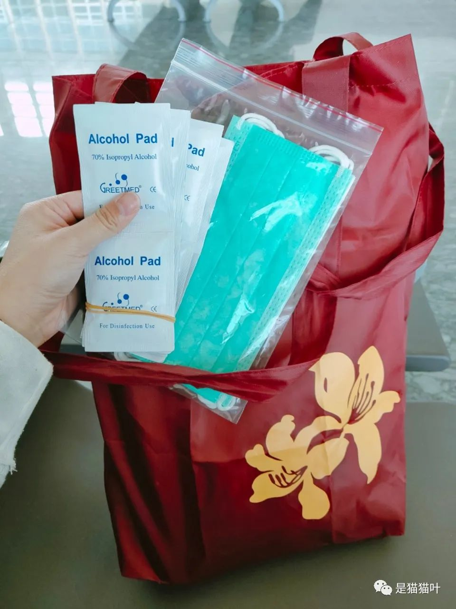
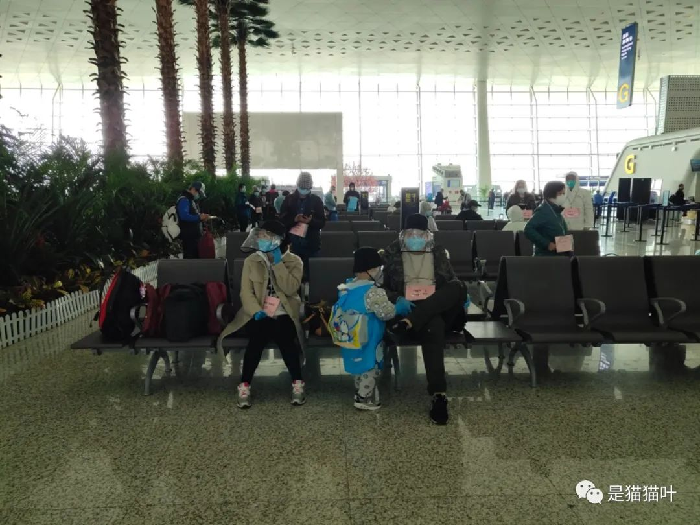
陆续托运行李、填写健康申报表后，过海关。
每一步都有工作人员指引。
在出关的时候，要求摘下口罩，红外线机器测到了体温。36.5
空旷的候机大厅只有我们一班飞机的乘客，工作人员指示按照飞机座位排数入座，座位上A4纸贴好了排数，大家有序地分散坐开。
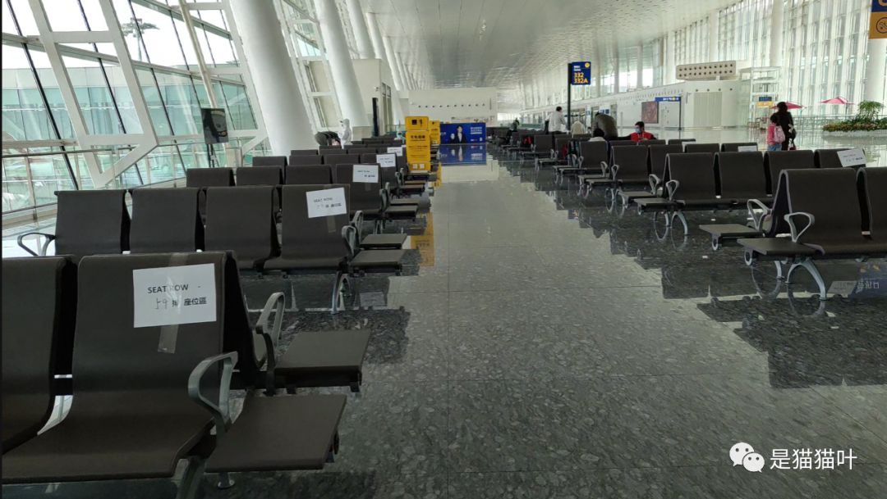
原以为没有餐食的安排，但还是意外地派发了杯面、饼干、香蕉和饮用水。从9点左右出门，到现在经过各个环节的等候已经是下午13点15分，好在有了食物的补充。
餐食不能带上机舱，飞行途中要求全程戴口罩，也不建议使用卫生间。

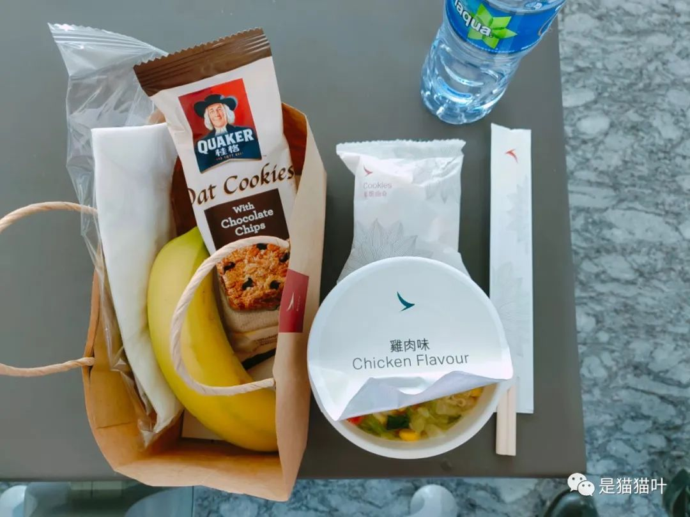
卫生署的医生一一来测体温和询问症状，之后手把手给每一个人示范怎样用酒精搓手液洗手，要数12345洗到每一个手指，要把指甲放在手心转圈圈…示范了多少次他也一起洗了多少次手。洗过手后才能穿防护衣。

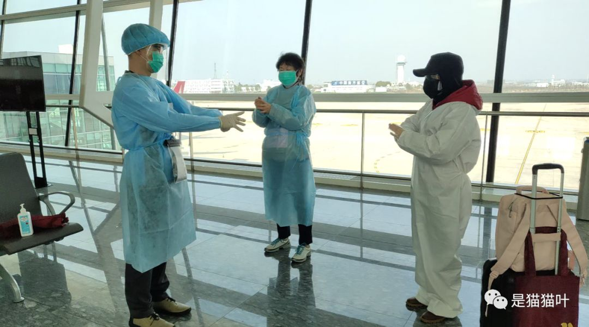
boarding time是14:20，计划起飞时间15:00。
登机也是按照座位排数分批次顺序登机。
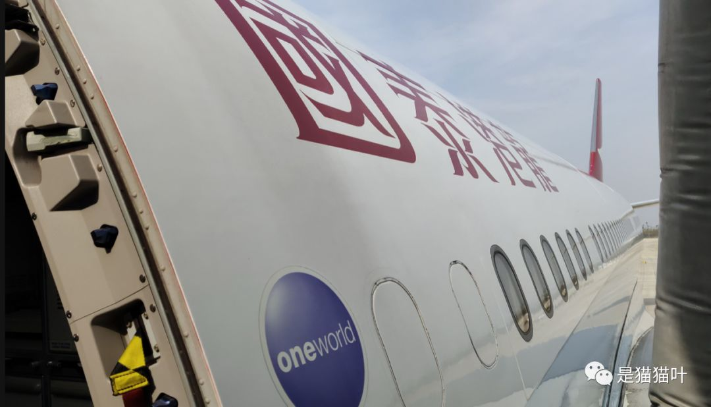

随机有穿套齐全的医生和医管局工作人员。
大家的座位被安排分散开来，我坐在靠窗的位置，旁边没有人。
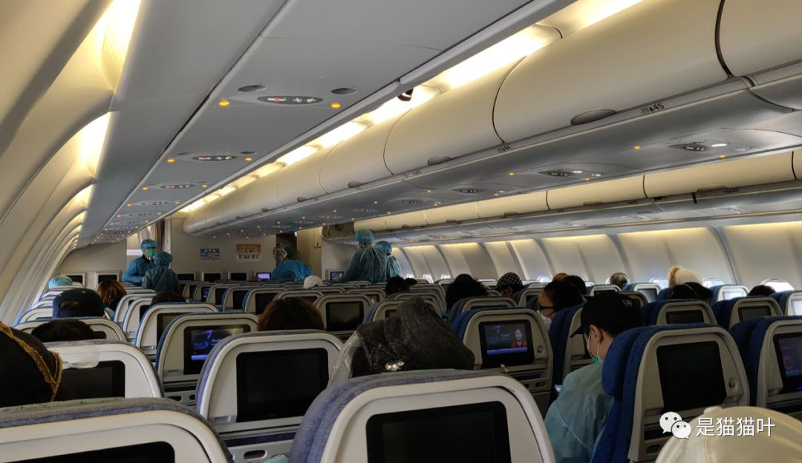
在各方工作人员的努力下，经历一个月的不断沟通，和这一周紧锣密鼓的落地安排，我们的“特别航班”在15:09起飞了。

整个行程我和大多数乘客一样都全程没有离开过座位。
路上沉沉地睡了一觉。
从早上8点50出门开始，除了在安检测体温和在候机时吃饭、上卫生间短暂地脱下过，连续戴了8个小时口罩，已经觉得有些闷热了。
有过这样的体验，更加觉得工作人员尤其是医护人员的不容易，况且他们在更高级别的防护下要工作更长的时间。
飞机快要降落时，卫生署的罗医生通过广播告诉大家落地后先在座位上稍等，照顺序依次量体温、下飞机。
“Welcome to our home, HongKong.”
5点左右，飞机平稳落地。
此时的香港，下着绵绵小雨。
机舱外的停机坪，有一排工作人员和媒体在等候。
感觉很多人在关心我们的归来。

17:21，按顺序下飞机，出舱门之前接受了额温测试。
从楼梯下来，直接上了大巴车。停机坪上还有一排大巴在等候。
大巴上也是隔开坐，一辆车只坐了14个人。
我们将直接去到火炭的骏洋邨检疫中心。

出发前在机场落车给时间去上卫生间。
同车的奶奶跟工作人员说“你说普通话沙，刚刚说上厕所我都听不懂。”
工作人员小哥哥笑着说“不好意思”，之后果然都尽量用港普讲话了。
一一落车，同时有三位工作人员来登记名牌上的名字和编号，
再经过一次酒精搓手液的“洗礼”，才去到卫生间。
回到车上时，每人又发了一份注意事项文件。
出发去骏洋邨，有警车摩托车在前面开路。
大巴车到达了骏洋邨屋苑门口，密集地闪光灯迎接首批返港人士。
19:08，可以落车了。在进入大门口之前，工作人员一一教大家脱下防护服，反过来卷在一起放入垃圾桶。
到大厅坐下等候叫名字，每个人发了一个小袋子：一支笔，一支电子体温计，健康申报表和体温记录表。

叫到名字后，发了订餐表、注意事项文件、两袋物资和一袋晚饭，分配了具体的房间号码。
发放物资的工作人员特别细致地把塑料袋的“耳朵”固定好一个圈圈方便我拿，且不用碰到他的手。
当时本能地有种被另眼相看的感觉，但仔细想想，这样也才避免了我们同行这么多人之间（潜在未知的）的交叉感染。
19:20，入住了骏洋邨的小房间。
独自一人被分配到单人间，如果是家人同行，会一起入住双人间。
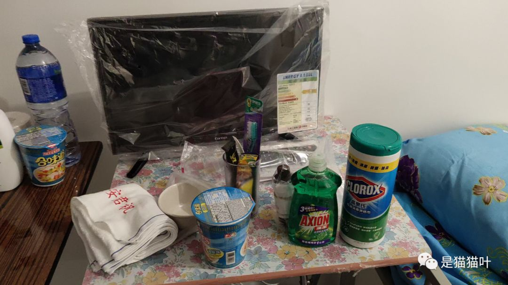

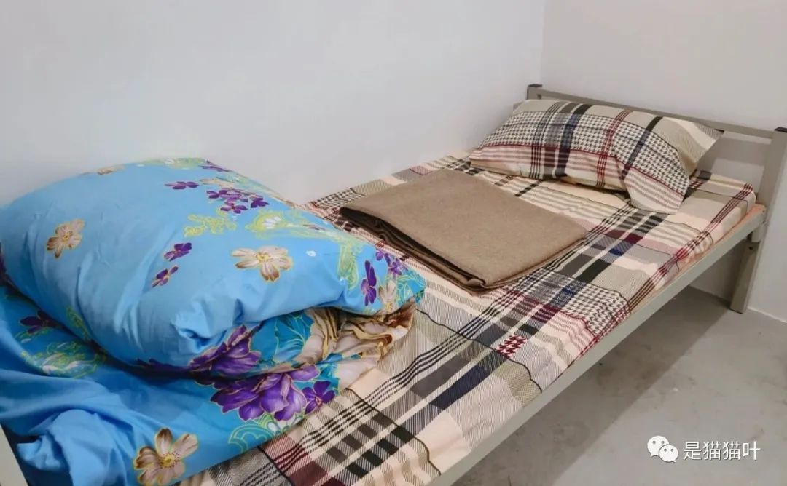
和之前群友们（湖北除武汉之外其他地区有人近期回港入住骏洋邨）讲得差不多，小房间里基本生活用品都很齐全：床，衣柜，桌子，洗漱用品，饮用水，杯面，还有全新的电器包括热水壶、暖风机、吹风筒、电扇…以及转换插头。
湖北返回人士专门要求了用消毒液洗头洗澡。

餐单可以填写一周七天的三餐选择，如果有另外物资需求可以再申请。

贴心的小细节是，注意事项的手册中专门列出了火警撤离和情绪疏导的部分。

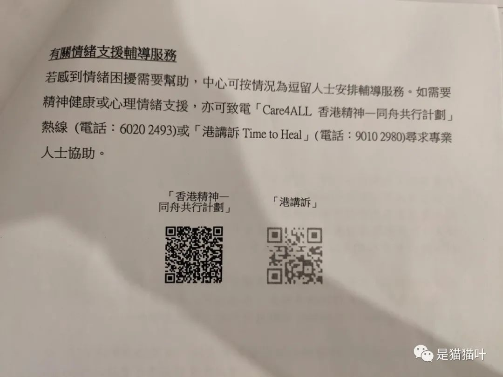
想到之前新闻里看到，某地社区给湖北返回人士家门口加装了铁栏杆，真不知道如果遇到火灾等紧急情况下的安排…香港政府的贴心安排真的很令人暖心。
大约晚上10点，工作人员把托运的行李箱送到房间门口。
经过一天将近12个小时的旅程，终于可以安心洗洗澡准备休息。
14天的隔离生活正式开始…
说说感想。
起初没有默认自己是“香港人”，可能因为还不是永久居民，可能因为粤语说得还不够流畅…也只是抱着试试的想法拨打电话登记，看有没有机会回到香港可以早点摆脱鼻炎的困扰，可以早点回香港见到我的小毛毛（头像的这只猫）。
没有想到的是，真的可以回来。
免费的专机，在检疫中心的14天生活也是全部免费。
在湖北滞留的香港人超过了2700人，其中在武汉的有大约500人，另外还要将其他几个地方的紧急个案专门送来武汉。
从2月中旬开始到3月4、5日成功接回来，这段时间想必做了大量的工作。
感谢收集我们信息的工联会，拉起群组、整理反馈大家的需求和意见，沟通安排事项。
把这首批返港的近500人一一确认信息，由入境处的工作人员挨个给每一个人打电话再三确认并添加微信，安排文件下发到几百个社区落实健康状况反馈，再安排车辆和司机去到每一个小区把人接到机场…
3月3日下午，接到通知第二天早上就要出发、却还不知道如何出行的伙伴们还在互相开玩笑“留给港府到时间不多了”。
晚上6点半，入境处微信发来了司机的联系方式。有小伙伴到晚上10点陆续接到通知坐5日的班机走。
入境处的工作人员也一直用微信在跟进我的行程。
“請問與司機聯絡了嗎”
“上車請你告訴我”
“到機場了？”
“上了飛機嗎”
“好的保重身體”
把分散在大武汉的500人平安地接回来，要保障工作人员的安全，也要确保中途乘客之间没有互相感染，巨大的工作量背后，是每一个环节的细致落实。
而正是这些细节，让我们能够放心地回港。
3月3日，出发前一天的早上，已经收到通知第二天能够回港。
在区域的早会里作为主持人，我给同事们的签到密码是“安全感”，分享了我即将返港的好消息和心情。
“因为香港就给我很大的安全感”，我告诉老大为什么选这个关键词。
我选择留在香港的原因，除了生活里点点滴滴的体验，最最关键的是两次住院和手术的体验（之后专门写出来吧）。
因为是在最脆弱的时候，这个城市的关怀和保障让我觉得依旧安心。
而这一次从武汉接回香港的特殊经历，
更加加强了我对香港的归属感。
在疫情刚刚冒出苗头的时候，港澳的一系列举措曾经被大家取笑过度紧张，事后才发现一点都不为过。
毕竟是经历过2003非典的香港，平时如果有感冒大家就会戴口罩出门，很多小朋友的书包上也都会挂上免洗的搓手液。
距离满7年拿到永居还有2年多的时间。
我相信我会继续热爱这座城市，在这里生活，工作，度过漫长人生。
也告诉大家，她有多么可爱。
To be continued…
「阅读原文」可以看到文汇报的视频记录，大部分是我在路上拍下的视频。
（重新做回小记者的感觉有些奇妙呀～）
——————————
（突发情况是写到一半，电脑突然死掉
于是开始用iPad艰难更新…佛系排版）
下一篇写入住后的生活吧。
预告一下今日早餐
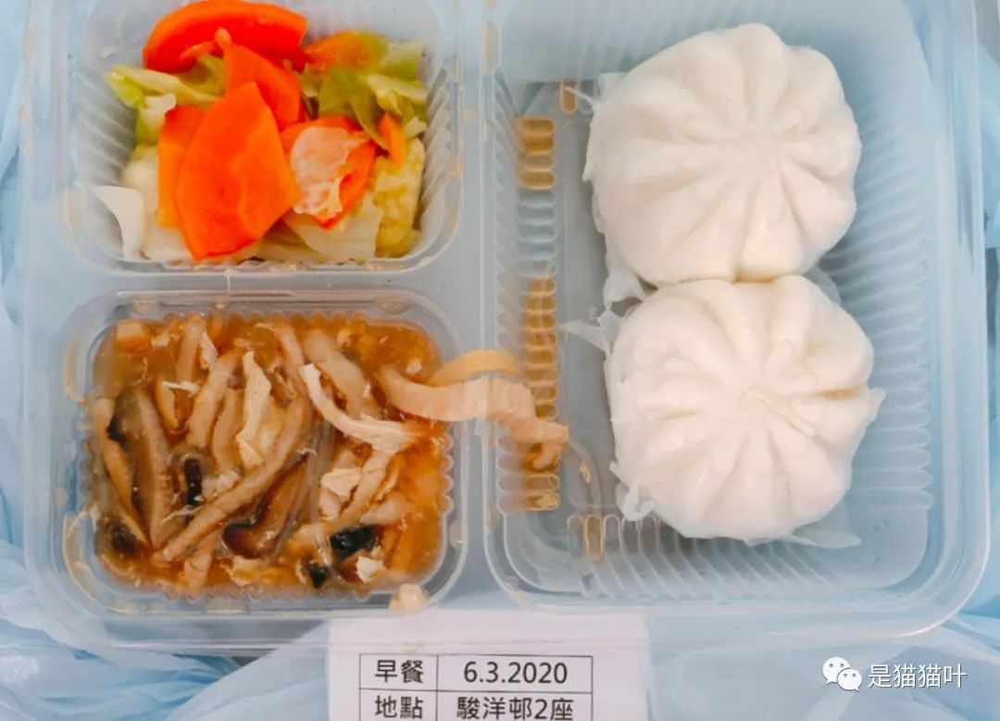
欢迎大家扫二维码添加好友
来聊5毛钱的天儿呗
陪我度过隔离期❤️

原文链接 备份链接 文 | 杨长安 情人节后的第二天，辛野开始帮助在外地回不了武汉的人喂宠物。 在此之前，这位健身教练在仅有一个棉质口罩的情况下，为不能出门的武汉居民送了九天的食物和生活用品。二月的武汉还很寒冷，注册为临时跑腿员的辛野， …
原文链接 备份链接 1月23日凌晨2点的一纸封城令，让留在这个城市的900万人，不得不承受封城的集体共命。处境和遭遇的不同，让同一片封城的天空下，生发出千万种不同的生活。 当大多数武汉人以家庭为单位防御新冠的时候，还有一些少数派，以异乡者 …
原文链接 备份链接 摘要：本文为“2020，我们的生活在继续”征文大赛的投稿作品。灾祸面前，谁都不知道自己会不会是那个被抽中的人。到了那时候，你希望别人怎么对你？ 武汉封城20天，COVID-19肺炎疫情爆发快两个月了，在这个时间点我想 …
原文链接 备份链接 若干年后回望，这一定是一段值得铭记的日子。因为新冠肺炎疫情，许多家庭无法团圆。疫情数据地图的每次刷新都令人揪心。我们和千万武汉人在一起，这不只是一句安慰，因为没有人能够置身事外。 之前，我们向用户征集这段时间的故事， …
原文链接 备份链接 *************▲*************1月29日，钱珵戴着用文件袋改装的面罩，在医院抽完血后自拍。 （受访者供图/图） 全文共4492字，阅读大约需要10分钟。 这次疫情有影响到我最近写剧本的内容， …